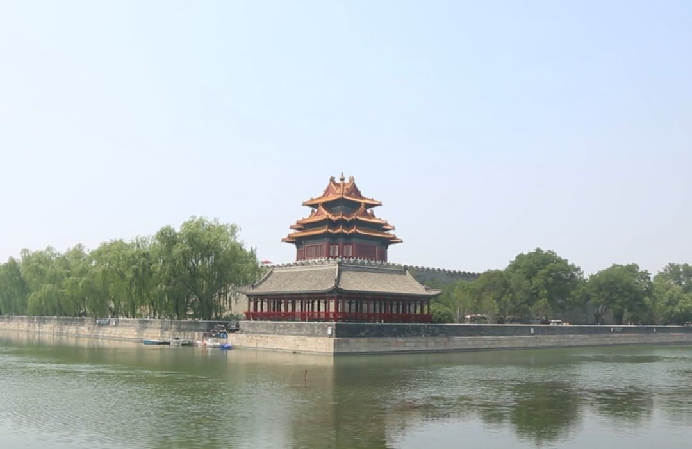
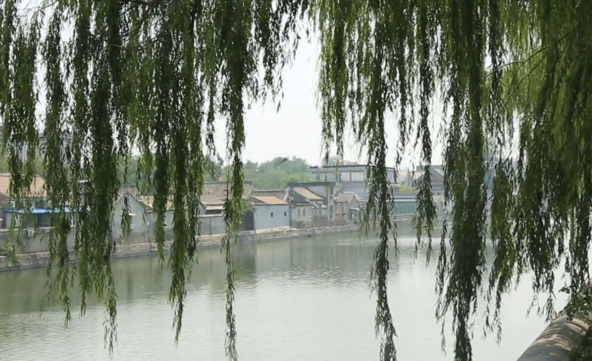
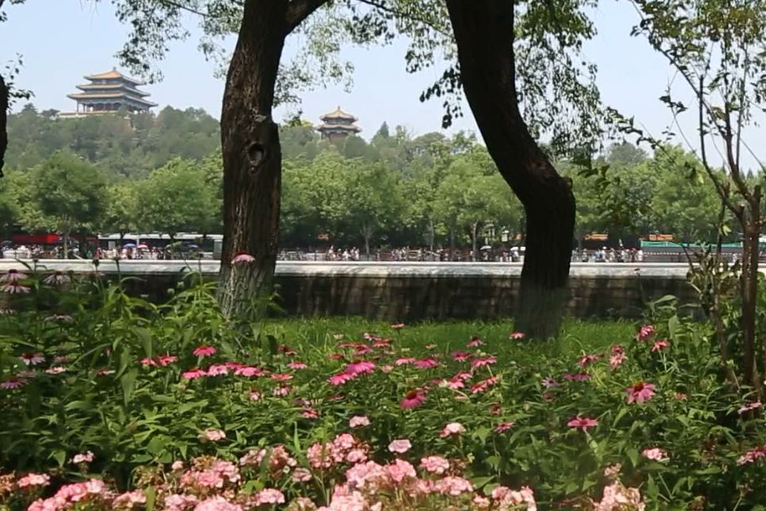
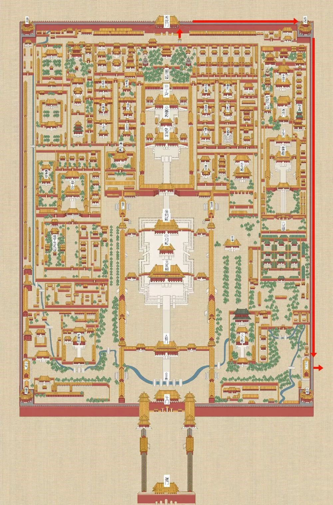
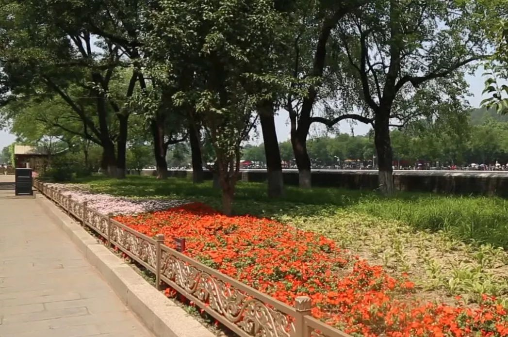
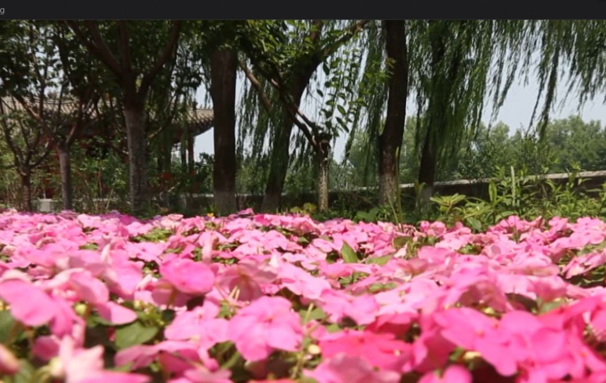
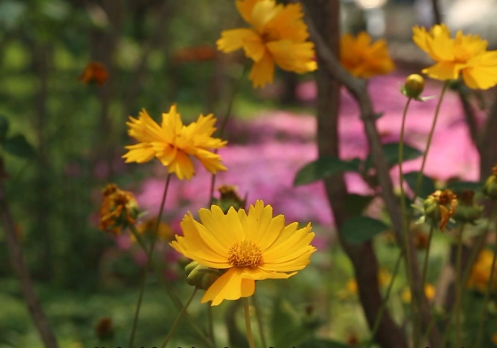

东城探秘 | 筒子河边走一走
来源：北京东城
故宫是中国明清两代的皇家宫殿，被誉为世界五大宫之首。本期《东城探秘》带您沿着修葺一新的筒子河逛逛，这一路有美食有美景，更能从一个独特的视角看故宫和景山。
故宫的护城河俗称筒子河。明永乐年间改建北京城时，在紫禁城外开凿了护城河，至今已有五百多年历史。明代，外筒子河只围绕紫禁城东、北、西三面，分别称为东华门筒子河、玄武门北筒子河、西华门筒子河。清乾隆二十五年（公元1760年），下令工部将午门右边的紫禁城河水，从西阙门外石板桥下面的暗沟引入西阙门，由午门前面石板道下的暗沟引向东流，经东阙门石板道下面暗沟流入太庙（今劳动人民文化宫）。这条长七十丈九尺九寸的暗沟定名为午门暗筒子河。至此，紫禁城护城河才形成今天的模样。筒子河从积水潭引水，与金水河相交，最终汇入菖蒲河。
现在的筒子河全长3.5千米，水面宽52米，深4.1米。筒子河除了防卫功能之外，还为故宫用水和防火提供水源。
在朱红色的高墙下，护城河水静静地流淌着。这道高墙将城内城外隔成了两个世界——过去和现在。河的这边是市井的惬意，河的那边是紫禁城的威严。
从今年1月1日起，故宫开放了神武门外至东华门外故宫城墙和筒子河之间的通道，这不仅能缓解景山前街的交通压力和神武门外的人流压力。也让大量游客可以不再沿着景山前街绕行前往王府井地区。
修葺一新的筒子河是东城区精品街区重点改造项目，北起神武门南至午门，呈“凹”字形，改造面积约20000平方米，是故宫筒子河绿地近年来范围最大的一次景观提升。筒子河延续故宫庄重、大气的皇家园林特点，结合绿地现状条件及景观特色，以简洁、大气的设计手法进行改造提升，设计中以绿地现状植物为依托，根据使用功能合理划分景观区域。
筒子河绿地改造工程共安装栏杆1986延米、道牙897延米，地被花卉栽植面积9691.9平米，草坪5500平米。全新的筒子河绿地景观更显皇家园林大气、庄重的特点，更为游客通行其间提供了更加舒适的环境体验。随着这片区域开放，一年春夏秋三季，观众徜徉其间，悠悠河水尽收眼底，淡烟疏柳无限风光；冬季，更可欣赏冰清玉洁的北国风光。
从神武门到午门步行大约需15分钟，一路上一河绕城，柳枝摇曳、花香淡淡，如果您下次来游玩，不妨也来走走这条新路线。